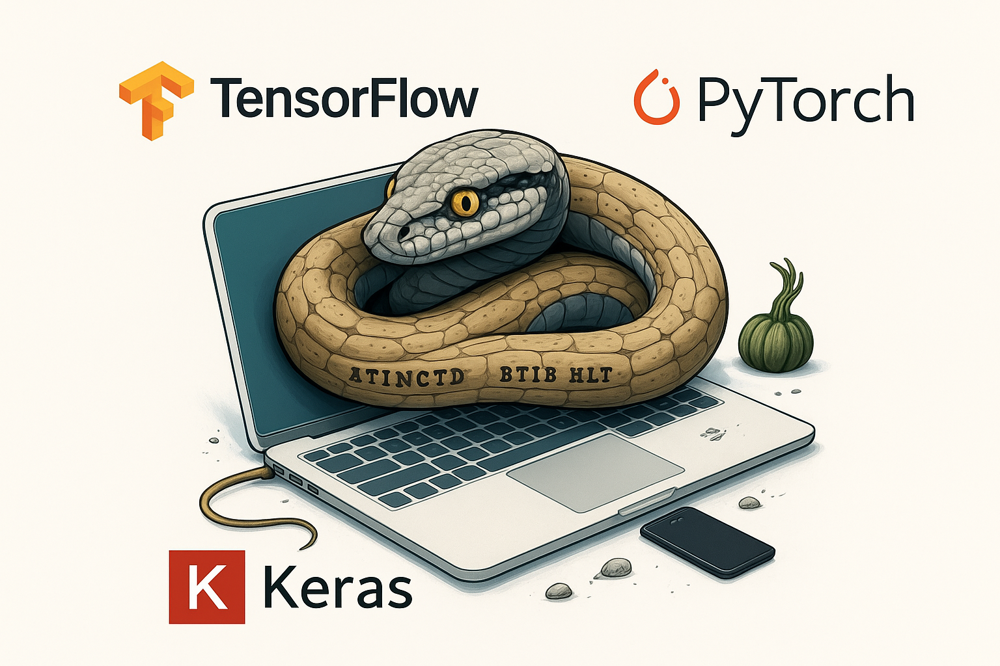
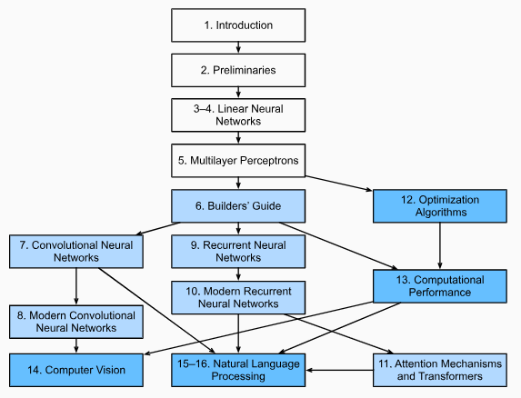

Deep Learning
BIENVENIDA
Objetivo
Brindar al participante los elementos teóricos y prácticos básicos alrededor de la programación de REDES NEURONALES ARTIFICIALES. Aprenderá las definiciones y aprenderá a distinguir estrategias y diferentes soluciones a problemas que pueden resolverse con algoritmos de deep learning y aprenderá a usar el conjunto de librerías en Python más novedoso, estructuradas y ampliamente usadas para la creación de estructuras neuronales aplicadas a problemas predictivos, clasificación y segmentación de imagenes, series de tiempo, procesamiento de lenguaje natural (NLP), etc.

Alcances del Programa
Al finalizar este curso, el participante será capaz de consumir, manipular y visualizar información para resolver problemas de propósito general asociados a los datos. Apenderá a implementar diferentes algoritmos de machine learning y mejorar su desempeño predictivo en problemas de clasificación, regresión y segmentación.
Requisitos:
- Computadora con al menos 8Gb Ram
- Instalar Python con versión 3.11 o superior
- Instalar un IDE preferido. Jupyter, RStudio, Spyder, VSCode, Colab
Temario:
00. Instalación
01. Introducción a Deep Learning
02. Preliminares
03. Redes Neuronales Lineales para Regresión
04. Redes neuronales Lineales para Clasificación
05. Perceptrón Multicapa
06. Guía del Constructor
07. Redes Neuronales Convolucionales
08. Redes Neuronales Convolucionales Modernas
09. Redes Neuronales Recurrentes
10. Redes Neuronales Recurrentes Modernas
11. Mecanismos de Atención y Transformers
12. Algoritmos de Optimización
13. Desempeño Computacional
14. Visión por Computadora
15. Procesamiento de Lenguaje Natural: Pre-entrenamiento
16. Procesamiento de Lenguaje Natural: Aplicaciones
17. Aprendizaje por Refuerzo
18. Procesos Gausianos
19. Optimización paramétrica
20. Redes Generativas Adversarias

Código
La mayoría de las secciones de este material presentan código ejecutable. En definitiva algunas intuiciones se desarrollan mejor mediante ensayo y error, modificando el código poco a poco y observando los resultados.
El código será presentado en chunks visibles y detacados respecto del resto del texto. Este puede ser copiador mediante el botón superior del lado derecho para su revisión y replicación en algún otro ambiente de prueba.
import collections
import hashlib
import inspect
import math
import os
import random
import re
import shutil
import sys
import tarfile
import time
import zipfile
from collections import defaultdict
import pandas as pd
import requests
from IPython import display
from matplotlib import pyplot as plt
from matplotlib_inline import backend_inlineDuración y evaluación del programa
El programa tiene una duración de XXX hrs.
Las sesiones serán atendidas los días XxXx, de 4:30 pm a 5:45 pm
Serán asignados ejercicios que el participante deberá resolver entre una semana y otra.
Durante todo el programa se realizarán prácticas para reforzar el aprendizaje.
Recursos y dinámica
Agenda
Todos los participantes del Hub podrán participar aprendiendo y compartiendo el conocimiento.
Este es nuestro documento para organizarnos internamente en cuanto a los temas a impartir, fechas y orden en que se irá compartiendo cada tema.
Software
En esta clase estaremos usando:
- Python da click aquí si aún no lo descargas
- R & RStudio da click aquí también
- Reticulate da click para aprender
- Bookdown da click aquí también
Bibliografía

|
Dive into Deep Learning Autor: Zhang, Aston and Lipton, Zachary C. and Li, Mu and Smola, Alexander J. Editorial: Cambridge University Press Año: 2023 |

|
Deep Learning Foundations and Concepts Autor: Christopher M. Bishop with Hugh Bishop Editorial: Springer Año: 2023 ISBN: 978-3-031-45467-7 |
|
|
Hands On Machine Learning with Scikit-Learn, Keras and TensorFlow Autor: Aurélien Géron Editorial: O´REILLY Año: 2019 ISBN: 978-1-492-03264-9 |

|
Reinforcement Learning Autor: Richard S. Sutton, Andrew G. Barto Editorial: The MIT Press Año: 2018 ISBN: 978-0-262-19398-6 |

|
Bookdown Autor: Yihui Xie Editorial: The R Series Año: 2025 |